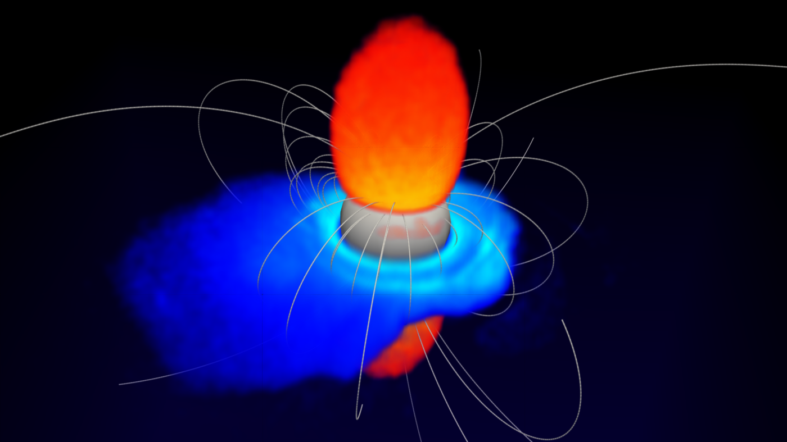

Diocotron Modes in Pulsar Magnetospheres: Charge Diffusion and Implications for Radio Emission Variability
The closed zone of a pulsar magnetosphere is usually treated as inert: charge settles into a disk-dome equilibrium and stays there. Using 3D particle-in-cell simulations of aligned and oblique rotators, we show that this equilibrium is unstable to the diocotron mode, and that it saturates into a long-lived m = 1 pattern carrying a few percent of the central point charge.
We derive a quasilinear radial diffusion coefficient for the resulting stochastic transport of charge across field lines, and use a multipole expansion to translate the diocotron charge moments into perturbations of the polar-cap potential and the emission beam. The predicted modulation timescales and amplitudes are in the range associated with nulling, periodic amplitude modulation, and drifting subpulses — suggesting that some radio variability is set in the closed zone rather than at the polar cap.
